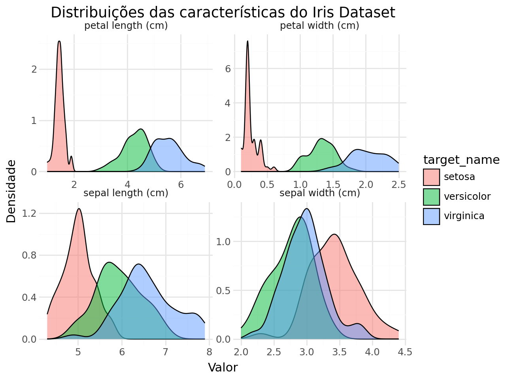
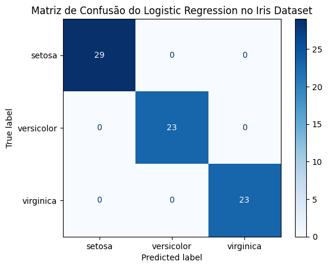

Atenção - Se você achou este conteúdo útil, considere apoiar o projeto me seguindo no Youtube, Instagram ou LinkedIn! 🚀
Iris
Importando as bibliotecas
Mostrar/Ocultar Código
from sklearn.datasets import load_irisimport pandas as pdimport numpy as npimport scipy.stats as stimport statsmodels.api as smimport statsmodels.formula.api as smfimport warningswarnings.filterwarnings('ignore')from plotnine import ggplot, aes, geom_point, geom_line, geom_histogram, geom_density, facet_wrap, labs, theme_minimalfrom janitor import clean_namesimport matplotlib.pyplot as plt
Conheçendo o Dataset Iris
O dataset Iris é um conjunto de dados clássico em aprendizado de máquina e estatística, frequentemente utilizado para demonstração de algoritmos de classificação. Ele contém informações sobre três espécies diferentes de íris (Iris setosa, Iris versicolor e Iris virginica) com quatro características medidas: comprimento e largura das sépalas e pétalas.
Ele é um dataset tão clássico que foi utilizado em diversos estudos e tutoriais, incluindo o trabalho de R.A. Fisher em 1936, que introduziu o conceito de análise discriminante linear. Unwin; Kleinman (2021)
Inclusive faz parte dos datasets padrão da biblioteca Scikit-learn, facilitando seu acesso para análise e modelagem.
Aula de Inglês
Petal: Pétala
Sepal: Sépala
Length: Comprimento
Width: Largura
Species: Espécie
Um pouco mais de conhecimento
Se você ta curioso apra saber a diferença entre as espécies como também a diferença entre sépala e pétala, aqui vai:
Será que é possível diferenciar as espécies de íris com base nas medidas das sépalas e pétalas?
Quais características (comprimento e largura das sépalas e pétalas) são mais eficazes para distinguir entre as espécies de íris?
Conseguimos prever a espécie de uma íris com base nas medidas das sépalas e pétalas usando um moadelo de classificação?
Objetivos do estudo
Hipótese: Acreditamos ser possível diferenciar as espécies de íris com base nas medidas das sépalas e pétalas.
Objetivos:
Hands-On
Carregando o dataset
Mostrar/Ocultar Código
iris = load_iris() # Aqui temos um conjunto de dados embutido no scikit-learndf_iris = pd.DataFrame(iris.data, columns=iris.feature_names)df_iris['target'] = iris.targetdf_iris['target_name'] = df_iris['target'].map({0: iris.target_names[0], 1: iris.target_names[1], 2: iris.target_names[2]})df_iris.drop(columns=['target'], inplace=True)df_iris['target_name'] = pd.Categorical(df_iris['target_name'])df_iris.head(3)
ggplot(df_long, aes(x='value', fill='target_name')) +\ geom_density(alpha=0.5) +\ facet_wrap('~variable', scales='free') +\ labs(title='Distribuições das características do Iris Dataset', x='Valor', y='Densidade') +\ theme_minimal()

Primeiras Impressões
Olhando as distribuições o tamanho das pétalas (petal length e petal width) parecem ser as características mais discriminatórias entre as espécies, especialmente para a espécie Setosa que se destaca claramente das outras duas.
Enquanro que as sépalas (sepal length e sepal width) mostram mais sobreposição entre as espécies, o que pode dificultar a distinção entre elas com base nessas características.
Brainstorming
Como estamos lidando com um problema de classificação temos algumas opções de algoritmos que podemos utilizar, a lista a seguir apresenta os algoritmos do mais simples aos mais complexos:
Logistic Regression
K-Nearest Neighbors (KNN)
Decision Trees
Esta será a nossa próxima etapa: construir modelos preditivos para classificar as espécies de íris com base nas medidas das sépalas e pétalas.
Preparando os dados para modelagem
Mostrar/Ocultar Código
from sklearn.model_selection import train_test_splitfrom sklearn.metrics import classification_report, ConfusionMatrixDisplay
disp_reglog = ConfusionMatrixDisplay.from_estimator(reglog_model, X_test, y_pred, cmap='Blues', normalize=None)disp_reglog.ax_.set_title('Matriz de Confusão do Logistic Regression no Iris Dataset')plt.show()

K-Nearest Neighbors (KNN)
\[ P(Y=i|X) = \frac{K_i}{K} \]
Mostrar/Ocultar Código
from sklearn.neighbors import KNeighborsClassifier
disp = ConfusionMatrixDisplay.from_estimator(knn_model, X_test, y_test, cmap='Blues', normalize=None)disp.ax_.set_title('Matriz de Confusão do KNN no Iris Dataset')plt.show()
disp = ConfusionMatrixDisplay.from_estimator(tree_model, X_test, y_test, cmap='Blues', normalize=None)disp.ax_.set_title('Matriz de Confusão do Decision Tree no Iris Dataset')plt.show()